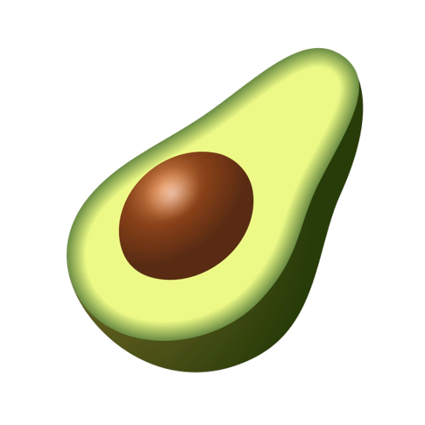

Guacamole casero con nachos.
Ingredientes
- 2 aguacates
- 1 tomate picado
- 1/4 de cebolla morada picada
- Cilantro al gusto
- 1/2 limón
Preparación
- Machacar los aguacates
- Agregar tomate y cebolla
- Limón al gusto
- Mezclar y salar

Receta de Guacamole
Guacamole casero con nachos.